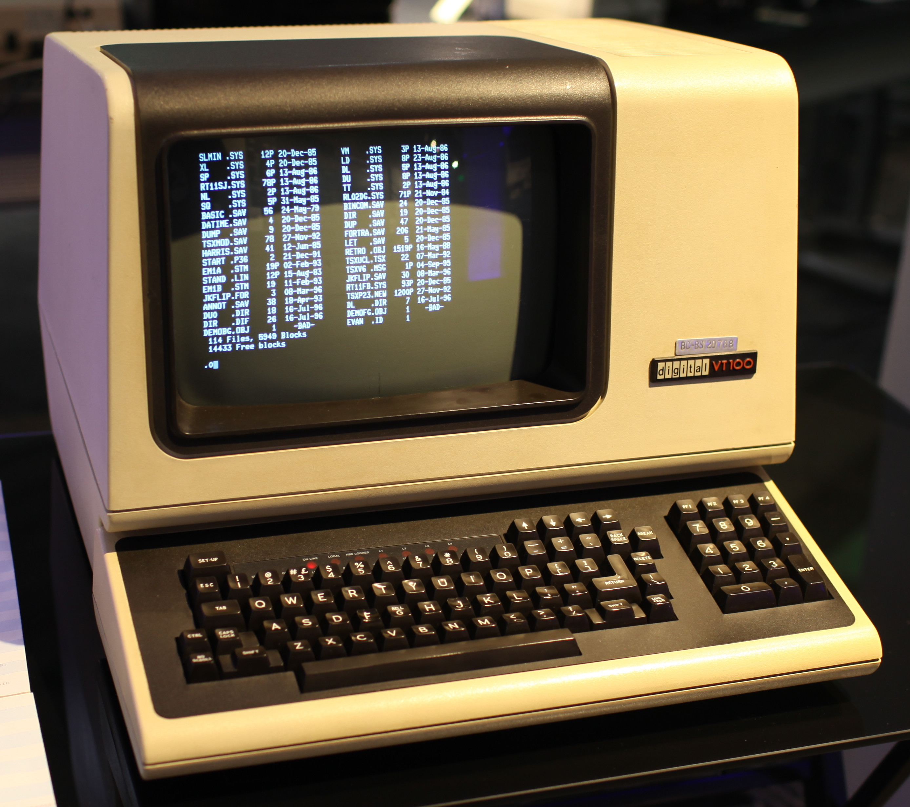
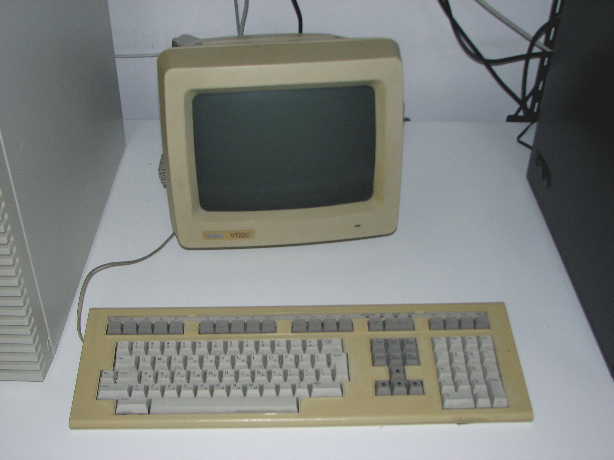
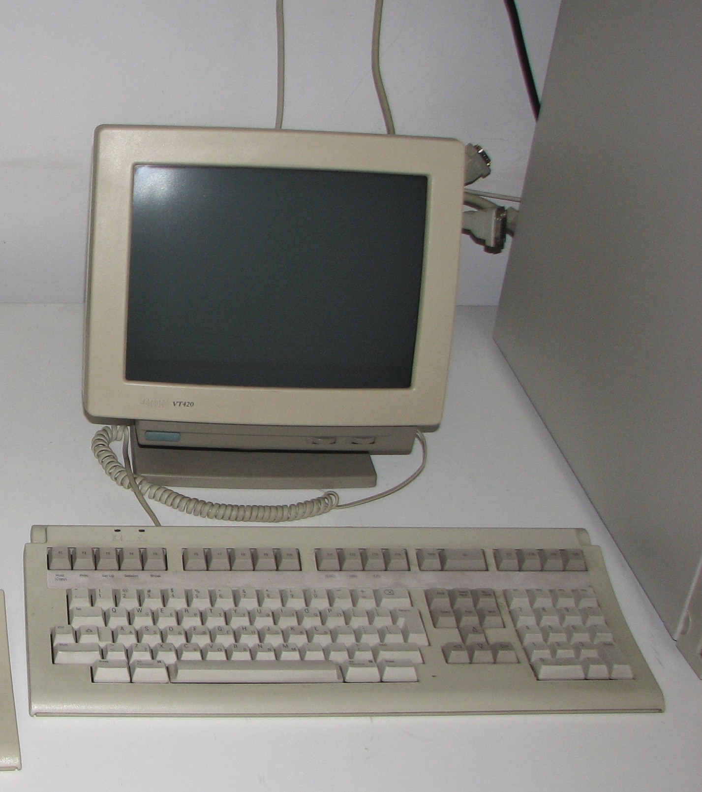
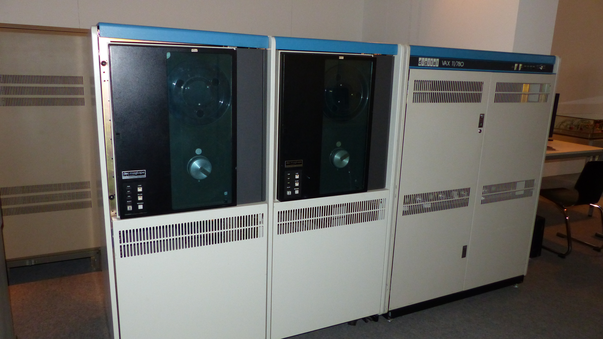

DEC Terminal Hardware Gallery

VT100
VT100
1978 · ~$1,500 (~$7,200 today)
The most influential terminal ever built. First affordable ANSI X3.64 compliant terminal. Introduced 80/132 column modes, smooth scrolling, box-drawing graphics characters, and the DEC Special Graphics character set. Cloned by virtually every competitor — ADM, WYSE, Televideo all made "VT100 compatible" terminals.
Display: 24×80 / 14×132
Baud: Up to 19,200
CPU: 8085 at 3.07 MHz
Screen: 12" P4 white phosphor
Weight: ~35 lbs (16 kg)

VT101
VT101
1982 · ~$795 (~$2,500 today)
The budget VT100 — same form factor, same ANSI compatibility, half the price. DEC cut costs by removing smooth scroll, downloadable character sets, and the 132-column mode. The amber phosphor option made it the choice of late-night hackers in university labs. Identical outer shell to VT100.
Display: 24×80 (fixed)
Baud: Up to 9,600
CPU: 8085 at 2 MHz
Screen: 12" P4 white or amber phosphor
RAM: 2 KB screen memory

VT220
VT220
1987 · ~$900
A massive leap over the VT101 generation. 8-bit character sets for international use (Latin-1, Hebrew, Greek), PC-style keyboard with F1–F20 and a numeric keypad, 132-column standard. The keyboard detached for the first time. National Replacement Character Sets supported 30+ languages. Introduced the "setup screens" UI for configuration without a manual.
Display: 24×80 / 24×132
Baud: Up to 38,400
Interface: RS-232 + printer port
Keyboard: LK201 detachable

VT420
VT420
1993 — DEC's final text terminal
The last great DEC terminal. Two simultaneous host sessions (switch with a keypress), 4-page screen memory for rapid context switching, enhanced NVRAM settings. VT52/VT100/VT220 emulation modes for backward compatibility. 14" amber or white monitor with tilt-swivel base. By this point, cheap PC hardware was making dedicated terminals obsolete.
Display: 24–48 rows × 80–132 cols
Sessions: 2 simultaneous hosts
Ports: RS-232 + printer + AUX
Screen: 14" amber or white

VAX
VAX-11/780
1977 · ~$200,000
The host machine that VT101 terminals connected to. DEC's VAX (Virtual Address eXtension) architecture dominated university and research computing in the 1980s. Running VAX/VMS or Ultrix (DEC's Unix), a single VAX-11/780 could serve dozens of simultaneous VT101 users via RS-232 terminal concentrators. 1 MIPS — roughly 1/4000th of a modern smartphone.
CPU: VAX-11/780 @ 5 MHz
Performance: ~1 MIPS
Memory: 1–8 MB
OS: VAX/VMS, Ultrix
TTY
Teletype Model 33 ASR
1963 · The original "TTY"
The ancestor of all terminals. A Teletype connected to a computer: you type, it prints on paper. No screen — just a roll of paper. The Model 33 ASR (Automatic Send-Receive) used ASCII encoding and ran at 110 baud (10 chars/sec). Unix was designed around the Teletype — the "/" in file paths comes from Teletype paper-tape conventions. The word "tty" in Unix refers to this device to this day.
Speed: 110 baud (10 cps)
Encoding: 7-bit ASCII
Interface: RS-232, 20mA current loop
Legacy: Unix /dev/tty, stty, tput
Physical Characteristics — VT101 vs VT100
VT101 Hardware Specs
Screen: 12" CRT, P4 white or amber phosphor
Resolution: 800×240 pixels (80×24 character grid)
Char cell: 10×10 pixels (7×10 active)
Interface: RS-232 serial, EIA RS-423
Baud rates: 75 – 9,600 baud
RAM: 2 KB screen memory
ROM: 16 KB firmware
CPU: Intel 8085 @ 2 MHz
Weight: ~25 lbs (11 kg)
Dimensions: 14" × 16" × 14" (W×D×H)
Price (1982): $795 (~$2,500 today)
What VT101 Dropped vs VT100
REMOVED from VT100 to make VT101:
× Smooth scroll (jump scroll only)
× 132-column mode (80 col fixed)
× Downloadable character sets
× AVO (Advanced Video Option)
— no double-width/height chars
× Printer port (added back in VT102)
× Second RS-232 port
KEPT from VT100:
✓ Full ANSI X3.64 / CSI sequences
✓ VT52 compatibility mode
✓ 24×80 display, 9600 baud max
✓ Amber phosphor screen option
✓ Same keyboard and outer shell
Phosphor Types
P4 — white phosphor (standard VT100)
Fast decay, high brightness, crisp
text. Most common in offices.
P31 — green phosphor (VT100 option)
The classic "green screen". Long
persistence — good for steady text,
blurs fast-scrolling content.
P38 — amber phosphor (VT101 option)
Warmer, easier on eyes for long
sessions. Popular in labs.
Amber had less eyestrain in dimly
lit computer rooms.
All are P-type (zinc sulfide based)
and produce characteristic glow and
slight "bloom" around bright pixels.